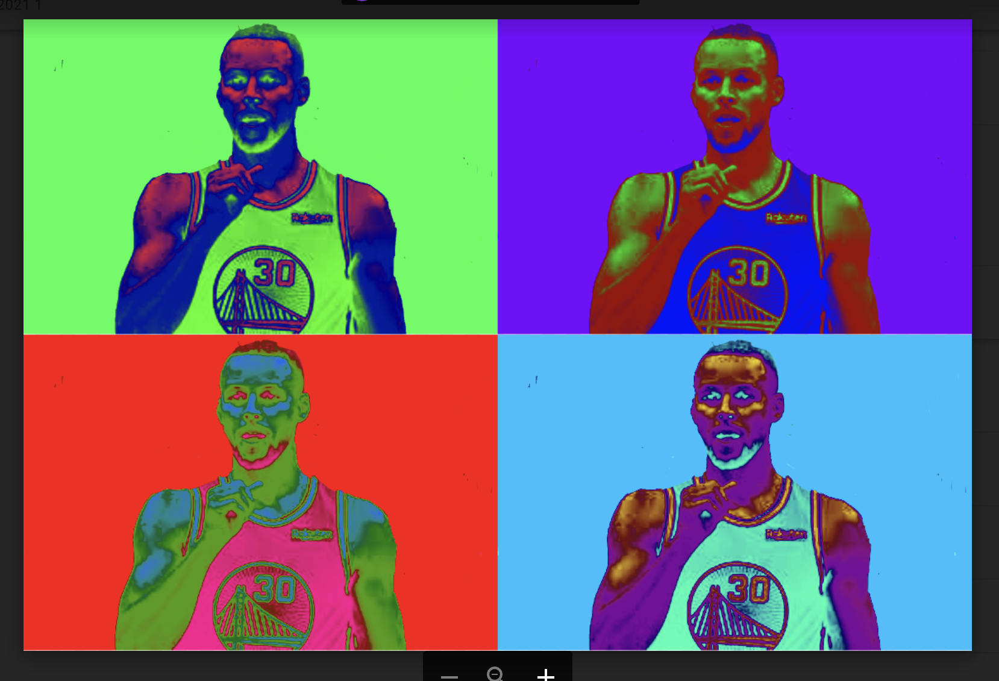
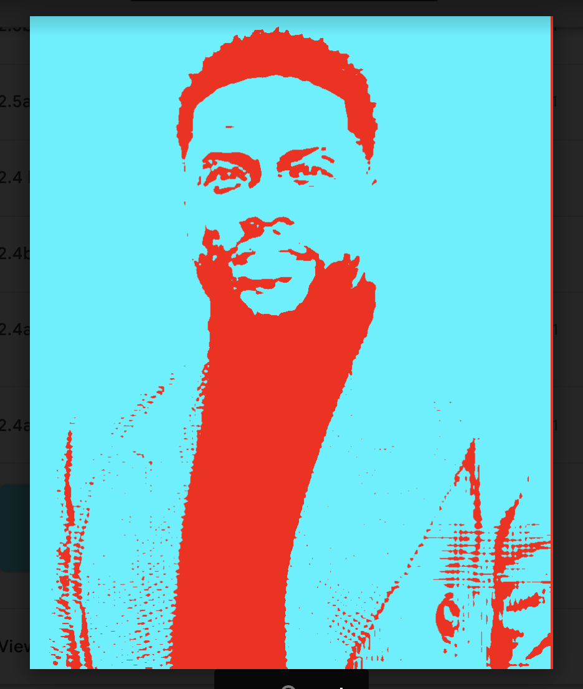

Visual Design Artifacts
Artifact #1

Artist's Statement:
My favorite portrait out of the 3 is the pop art gradient portrait. I chose this one because Stephen Curry is one of my favorite basketball players ever. The colors I chose to make it pop were green, blue, red, and purple. First I went on google and found an image of Stephen Curry. After that I had to erase the background of the picture. Finally I had to change the color of the picture 4 times and then drag it to each corner.
Artifact #2

Artist's Statement:
My favorite portrait out of the 3 is the pop art celebrities portrait. I chose this one because Kevin Hart is one of my favorite actors ever. The colors I chose to make it pop were blue and red. First I went on google and found an image of Kevin Hart. After that I had to erase the background of the picture and make it blue. Finally I had to change the color of the his clothes to blue and red.